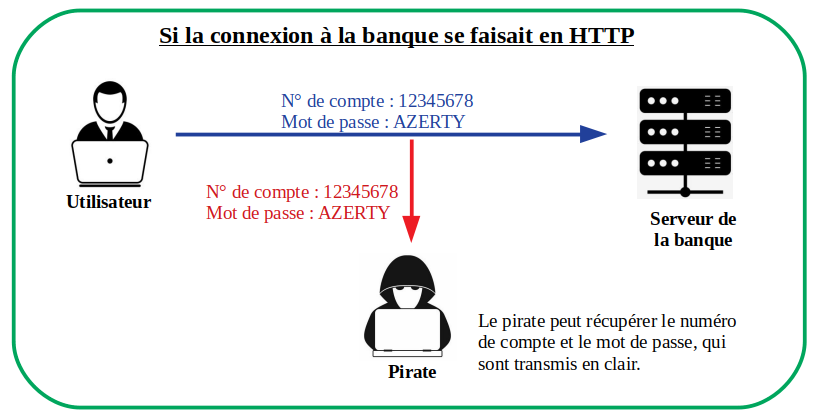

L'échange d'information entre serveur et client se fait à l'aide de protocoles. Le protocole HTTP permet d'échanger des données qui sont visibles par tout le monde et qui ne sont pas confidentielles. Une personne peut intercepter ces données et éventuellement les utiliser ensuite. 
Au cours d'une connexion HTTPS, les données échangées sont cryptées. Ces données peuvent être interceptées, mais comme elles sont cryptées, elles sont inutilisables.
Lors d'une connexion HTTPS, le serveur envoie au client un certificat SSL contenant une clé publique qui sert à crypter les données. Le serveur lui possède la clé privée qui sert à décrypter les données et lui seul la possède. Le certificat SSL doit être validé par une Autorité de Certification reconnue. Le certfificat SSL étant validé, la communication HTTPS cryptée peut se mettre en place.
Sur votre cours (Exercice 6.2 de la feuille 6), compléter le schéma donnant les différentes étapes du protocole HTTPS.